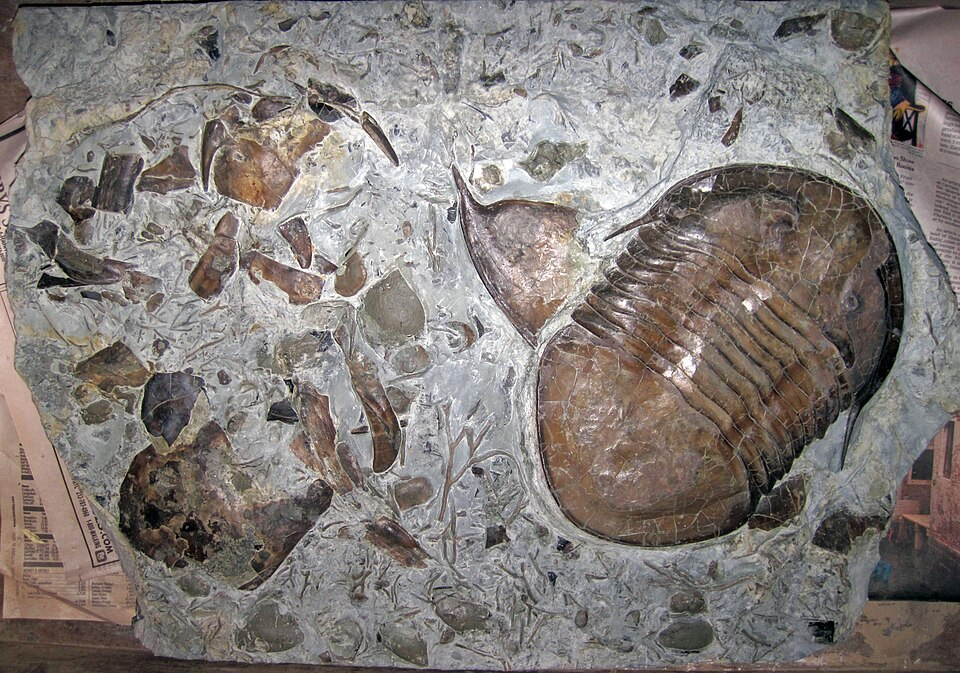

Life Sciences · Deep Time · Evolution · 539 Million Years Ago
An Ocean of New Forms
Around 539 million years ago, animal life began a remarkable diversification. Over millions of years, fossils reveal more shells, burrows, complex eyes, and swimming animals. What changed in the oceans—and how much of the story can a fossil tell us?
Your investigation
Did life change, or did preservation change?
Compare three kinds of fossil evidence. Then build a creature and explain how one trait could help it find food or avoid a predator.
Learn → inspect evidence → design → explain
Deep Time · What, When, and Why
The Greatest Arms Race in Earth's History
The Cambrian Explosion was a major diversification of animals, especially during the early Cambrian. “Explosion” means rapid on a geological timescale: many millions of years, not a single sudden event.
Life was already diverse before the Cambrian. Ediacaran rocks preserve large organisms, evidence of movement, and some early animals. During the Cambrian, many animal groups became more abundant and recognizable in the fossil record.
Three words help us investigate: diversity is the variety of organisms; a body plan is their basic arrangement of parts; preservation bias means some organisms leave fossils more easily than others.
Several processes may have interacted: changing oxygen availability, ecological opportunities, developmental changes, and feedback between predators and prey. More oxygen can support active bodies; predation can favor defenses. No single trigger explains every fossil pattern, and the great “Snowball Earth” glaciations ended long before the Cambrian.
A body plan describes features such as symmetry, segmentation, and the arrangement of organs. A phylum is a broad evolutionary group, not an interchangeable name for a blueprint. Fish and humans are chordates; insects and crabs are arthropods. Fossils help scientists trace how shared features evolved.
The Timeline of Life
- Precambrian Eons
- Paleozoic Era
- Mesozoic to Modern Life
-
ArcheanEarly evidence of microbial life. Cells had no organs; some microbes could move.
-
EdiacaranLarge organisms such as Dickinsonia appear. Some early animals moved and fed on microbial mats.
-
Cambrian ← You Are HereAnimal groups diversify. Shells, burrows, eyes, and appendages become conspicuous in the fossil record.
-
TodayLiving animals share ancient features, but their bodies continued evolving after the Cambrian.
Investigate · Fossils are evidence, not a complete census
One ocean, three different records
Predict: if a mudslide buried a community of shelled animals and soft worms, which parts would you expect to find millions of years later? Compare the records below.
More kinds of fossils can reflect biological diversification, better preservation, or both. Explain why shells alone would underestimate diversity. What extra evidence would a burrow or a preserved gut add?
Discovery · British Columbia, 1909
The Burgess Shale: A Window Into the Cambrian
In 1909, Smithsonian paleontologist Charles Walcott discovered extraordinary fossils in the Canadian Rockies. The rocks contained fossils — soft-bodied Cambrian animals preserved in such perfect detail that you could see their gills, their guts, and their eyes.
The Burgess Shale (in British Columbia) became one of the world’s most important fossil deposits. It gave us our clearest picture of what life looked like 508 million years ago — an alien ocean teeming with creatures unlike anything alive today.
Stephen Jay Gould's 1989 book Wonderful Life brought these creatures to popular attention and sparked a debate: were Cambrian creatures evolutionary dead-ends, or the ancestors of everything living? Many belong to extinct branches near living groups, rather than being their direct ancestors.
Normally, only hard parts — bones, shells, teeth — fossilize. Soft tissue rots in hours to weeks. The Burgess Shale preserved soft bodies because animals were buried rapidly in fine mud at the base of an underwater cliff, in oxygen-poor conditions that slowed decay. The result: creatures with no shells or bones — worms, gills, digestive tracts — preserved in stone.
The Burgess Shale is the most famous, but other exceptional Cambrian fossil beds exist: the Chengjiang biota in Yunnan, China (~520 mya) preserves even older soft-bodied creatures, and the Sirius Passet in Greenland offers another snapshot of early Cambrian life. Together they show the Explosion was global, not local.
%2C%20Royal%20Tyrrell%20Museum%2C%20Drumheller%2C%20Alberta%2C%202025-07-13.jpg?width=900)


The Burgess Shale Creatures · 508 Million Years Ago
Meet the Cast

These animals reveal different ways of moving, feeding, and defending a body. The models and drawings are stylized reconstructions, not photographs of living animals. The trilobite model represents a later group, rather than a Burgess Shale species.
The most successful animals of the Paleozoic. Trilobites patrolled the ocean floor for 270 million years. Their compound eyes — built from calcite crystals — could form detailed images of their surroundings. Over 20,000 species are known.
A large Cambrian swimmer with adaptations for catching prey. It had stalked compound eyes, a circular toothed mouth, and grasping frontal appendages. Its name means "strange shrimp."
So strange that paleontologists drew it upside down for 20 years. It walked on paired soft legs, with defensive spines along its back. Recent analysis linked it to velvet worms (onychophorans) — so it did have living relatives after all.
Five eyes and a flexible snout tipped with a claw for grabbing prey. Harry Whittington’s reconstruction challenged familiar classifications. It is now placed near early arthropod relatives: an extinct branch, not evidence of an entirely unrelated animal blueprint.
A tiny tank armored with overlapping scales and tall defensive spines. It crawled along the seafloor scraping algae off rocks. Paleontologists debated for decades whether it was a mollusk or a worm — its relationships remain debated; a mixture of traits does not make it a direct ancestor of both groups.
A small, leaf-shaped swimmer with a primitive notochord — a stiff rod running the length of its body. A notochord supports the body; vertebrates also develop a notochord, with vertebrae forming around it. Pikaia is one of the earliest known chordates, making it an early relative of vertebrates, not a proven direct human ancestor.
Design for a way of life
1. Choose a challenge. 2. Predict which trait will help. 3. Save a design, change one trait, and compare. Explain a benefit and a possible cost.
The scores are invented teaching rules (0–4), not measured survival probabilities. Color has no effect. Randomizing traits explores designs; it does not simulate mutation or natural selection.
No creatures saved yet — design one above and hit Save!
Evolution · Contingency · Deep Time
Why the Cambrian Explosion Still Matters
Evolutionary change can accumulate at different rates. The Cambrian records a major radiation of animals over millions of years. A fossil’s first appearance need not mark the exact moment its lineage originated.
Gould argued that if the Cambrian were "replayed," different creatures would survive and humans might never appear. Our existence depends on a chain of unlikely survivors — but fossils alone cannot establish what would happen in a replay. Pikaia illustrates an early chordate relative, not a confirmed link in our direct ancestry.
Bilateral symmetry and a notochord connect us with ancient animals. Vertebral columns and four limbs evolved through later changes. Shared ancestry explains both the similarities and the differences between Cambrian animals and us.
The builder is a thought experiment. Real evolution changes heritable traits across generations through processes including mutation, natural selection, and drift. It does not freely swap complete body parts. A plausible design is a hypothesis to discuss, not proof that an animal existed.
Explain what the evidence supports
- Why can a rapid geological event still take millions of years?
- Use two fossil record types to explain why preservation alone cannot tell the whole story.
- Compare two saved designs. Which trait changed? Explain its benefit, its cost, and one limitation of this model.
Sources & further investigation
International Commission on Stratigraphy: period boundaries · Royal Ontario Museum: fossil evidence · ROM: proposed triggers · ROM: reinterpreting Hallucigenia
Dates are rounded; numerical geological boundaries have uncertainty. “mya” means million years ago.